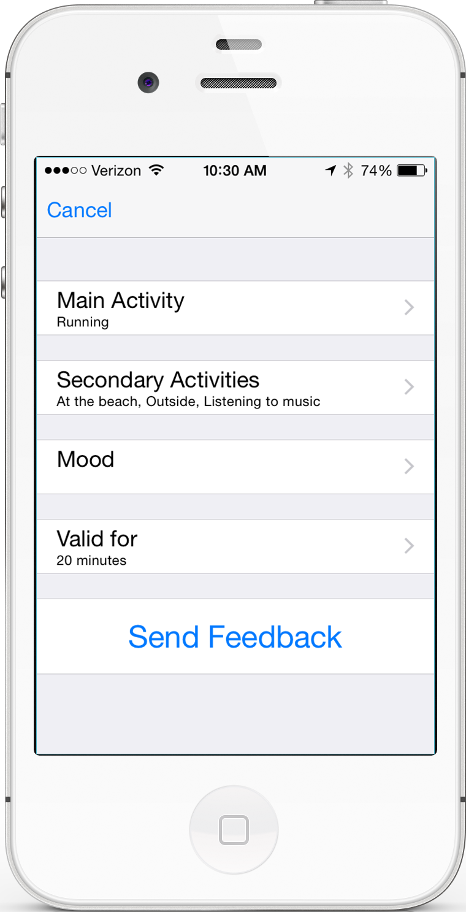
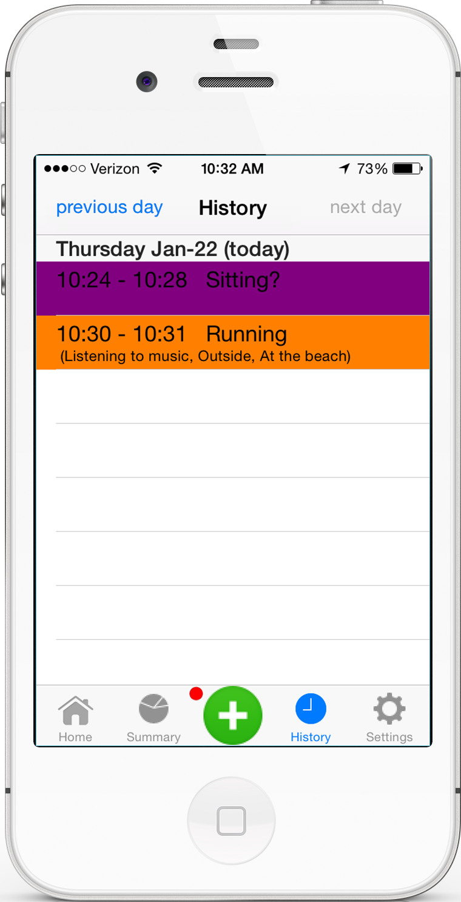
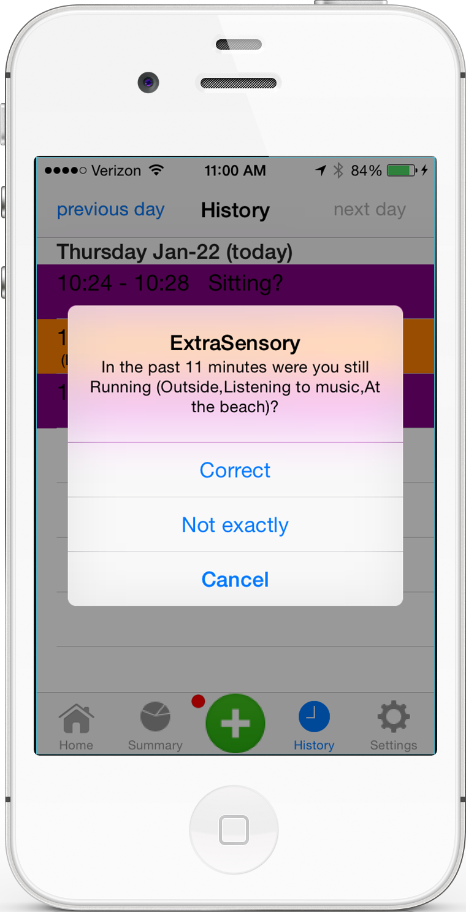
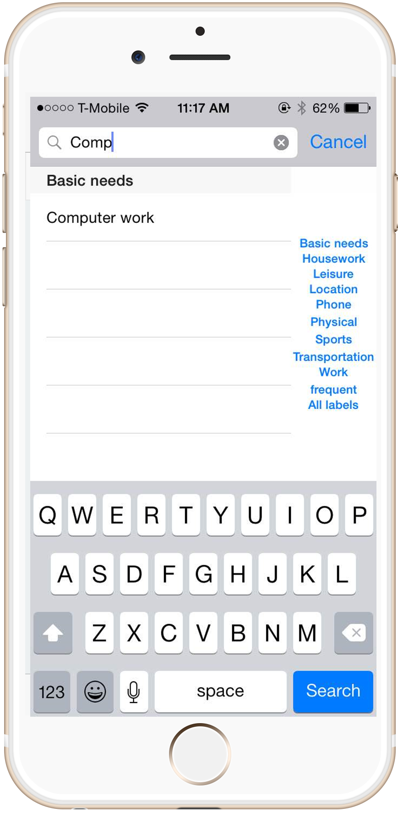

ExtraSensory REU: Context-Recognition Application using Mobile Sensors
Date: Oct 2014- June 2015
Under the REU (Research Experience for Undergraduates) program, I worked in Gert Lanckriet's lab teaming with two of his PhD students. The ultimate goal was to create a context-aware mobile application that would predict the actions, mood, and setting of a user based on GPS, speedometers, and motion detection.
I worked on mainly the UI for the iOS and Android mobile application with Swift and Java respectively. For the iOS application, I worked on the search functionality as well as the history section. For the Android application, I worked on creating the history section as well. I also helped create a new logo with Adobe Photoshop and Illustrator.




The main use we were focusing on was for medical applications such as for rehabilitation, long-term health logging, mental health, pain treatment monitoring, and assisted living. Our main goal was to first collect a rich data set using the mobile application and to improve the context-recognition algorithm.
The application will collect 20 seconds of measurements every minute, send it to the server, and get an initial prediction of activity. We had to learn how to balance the tradeoff between non-instrusiveness of the free living setting and the quantity, specificity, and reliability of the labels. We also had to make it as easy as possible for the user to report labels.
In the first photo, the active feedback lets the user set the same labels for X minutes. In the second, history allows the user to provide more labels of past activity. In the third, the notification allows for the user to give quick answers to label a continuous activity. The last shows the ability for users to search for possible activites.